Coruja Buraqueira
 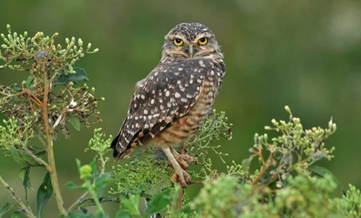
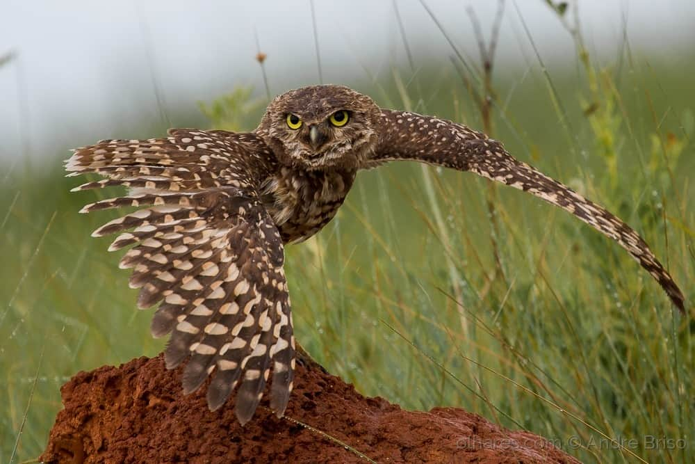
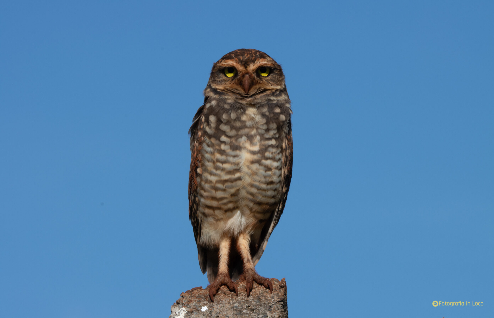
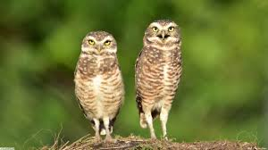
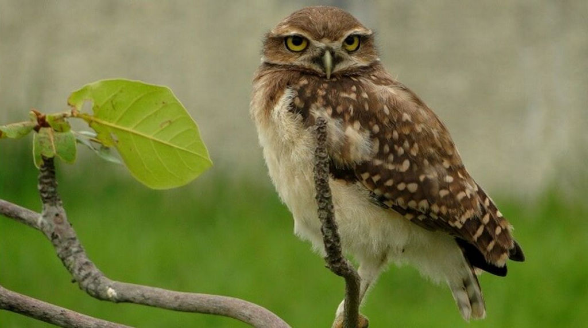
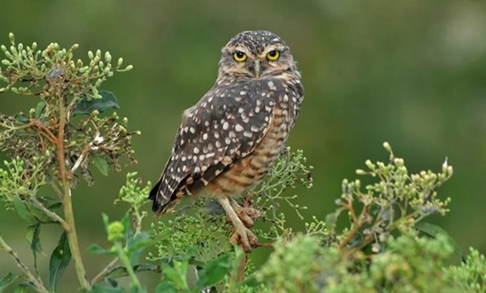
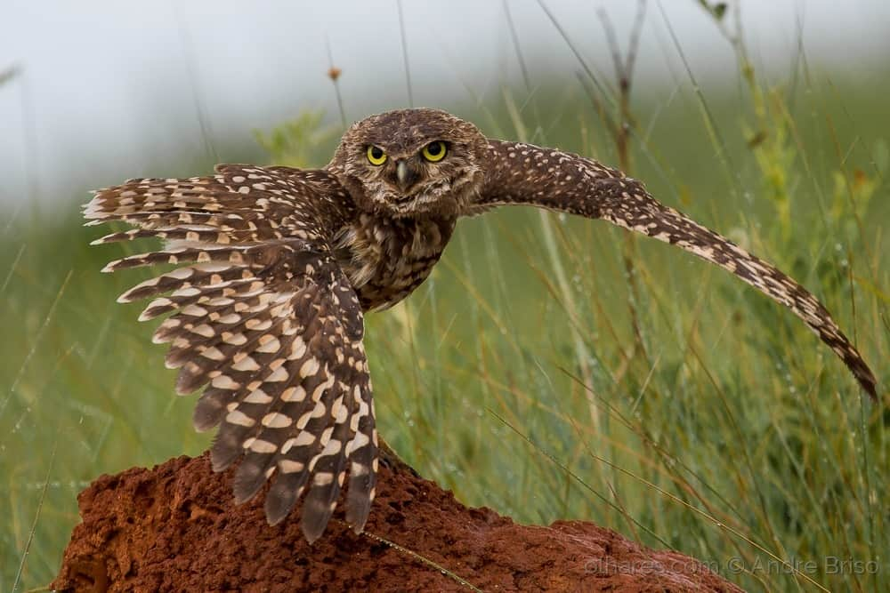
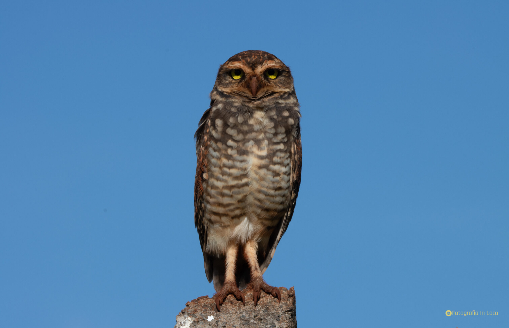
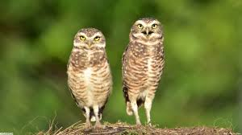
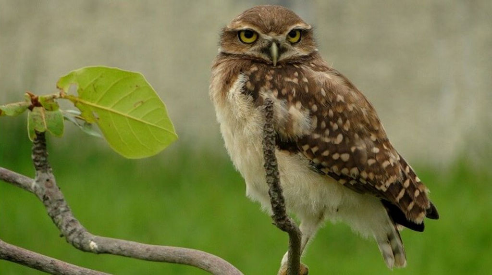
INFORMAÇÕES SOBRE O ANIMAL
- Nome Científico: Athene cunicularia
(Molina, 1782) - Nomes Populares: Também conhecida pelos nomes de caburé, caburé-de-cupim, caburé-do-campo, coruja-barata, coruja-do-campo, coruja-mineira, corujinha-buraqueira, corujinha-do-buraco, corujinha-do-campo, guedé, urucuera, urucureia, urucuriá, coruja-cupinzeira (algumas cidades de Goiás) e capotinha.
- Atualmente a espécie não corre risco de extinção.
Classificação Biológica
- Dominio: Eukaryota
- Reino: Animalia
- Filo: Chordata
- Classe Aves
- Ordem: Strigiformes
- Família: Strigidae
- Espécie: A. cunicularia
Nutrição Geral e Hábitos Alimentares
- Tipo de Nutrição: Heterotrófico.
- A Coruja Buraqueira é uma predadora de pequeno porte com hábito carnívoro-insetívoro. Ela é considerada generalista, pois consome as presas mais abundantes de acordo com a estação. Aqui estão alguns exemplos dos principais tipos de alimentos que a Coruja Buraqueira ingere:
- Pequenos Roedores: A Coruja Buraqueira tem uma preferência por roedores, o que a torna muito útil para o controle de pragas.
- Insetos: Ela consome várias ordens de insetos, incluindo coleópteros (besouros), ortóptera (grilos e gafanhotos), díptera e himenóptera.
- Répteis e Anfíbios: A dieta da Coruja Buraqueira também inclui pequenos répteis e anfíbios.
- Pequenos Pássaros: Espécies como pardais também fazem parte da dieta desta coruja.
- Escorpiões: A Coruja Buraqueira também se alimenta de escorpiões.
- Embora possa caçar a qualquer hora do dia, a Coruja Buraqueira prefere o entardecer e o amanhecer, ou seja, o crepúsculo. Isso mostra o quão adaptável e versátil essa espécie é em termos de alimentação
Morfologia Básica e Coloração
Tamanho e Dimensões
- A Coruja-buraqueira é uma ave de pequeno porte. O tamanho médio dos machos é de 21,5 a 28,5 cm e das fêmeas é de 22 a 25 cm.
O peso varia entre 110 e 285 g para os machos e entre 150 a 265 g para as fêmeas.
Ela possui a cabeça redonda, sem penachos e os olhos estão dispostos lado a lado, num mesmo plano.
Ao contrário da maioria das corujas, o macho é ligeiramente maior que a fêmea. - Coloração
- A coloração da Coruja-buraqueira é terrosa, mimética, podendo apresentar plumagem em tons de ferrugem causada por solos de terra roxa.
As sobrancelhas são brancas e os olhos são amarelos.
As fêmeas são normalmente mais escuras que os machos, principalmente na face.
O adulto possui um tom de cor forte, tem o peito e a barriga com coloração parda, traços cor de terra, variações de marrom, que lembram manchas e barras.
O jovem é similar na aparência, mas é gorduchinho, desengonçado, com as penas descabeladas e coloração leve. Seu peito é totalmente branco, sem as variações marrons. Comportamento Geral e Sobrevivência
- Comportamento Geral: A coruja-buraqueira é conhecida por seu comportamento de viver em buracos no chão. Ela é uma ave principalmente noturna, mas também pode ser vista durante o dia. Ela é solitária, mas às vezes pode ser vista em pequenos grupos.
- Estratégia de Caça: A coruja-buraqueira é um predador eficaz. Ela usa sua audição aguçada e visão noturna para localizar suas presas. Sua dieta consiste principalmente de pequenos roedores, insetos e outros pequenos animais. Ela caça à noite, voando baixo sobre o chão para surpreender suas presas.
- Estratégia de Defesa e Sobrevivência: A coruja-buraqueira usa várias estratégias de defesa e sobrevivência. Uma de suas principais estratégias de defesa é seu comportamento de viver em buracos no chão. Isso a protege de muitos predadores. Além disso, sua coloração de penas ajuda a camuflá-la em seu ambiente, tornando-a difícil de ser vista por predadores e presas.
- Além disso, em situações de estresse, como escassez de alimento, agressão física por interações agonísticas ou desastres naturais, pode-se observar um aumento na prática do infanticídio.
- Principais Predadores da espécie: Os principais predadores são: serpentes, gavião-caracará, cachorro-do-mato, gato-do-mato e entre outros.
Ocorrência
- Biomas de Ocorrência
- Mata Atlântica: Este bioma abriga uma grande diversidade de espécies, incluindo a coruja-buraqueira.
- Caatinga: A coruja-buraqueira também pode ser encontrada neste bioma, que é caracterizado por sua vegetação espinhosa e semiárida.
- Pampas Gaúchos: Este bioma, localizado no sul do Brasil, também é um habitat para a coruja-buraqueira.
- Cerrado: A coruja-buraqueira também habita áreas de cerrado alterado, próximo às habitações.
- Campos e Pastos: A maioria das corujas-buraqueira nidifica nos biomas das pastagens.
- Desertos e Florestas: Alguns indivíduos nidificam em biomas do deserto e da floresta.
- Distribuição no Território Nacional
- A coruja-buraqueira ocorre em quase todo o Brasil. Sua presença é mais comum em campos, pastos ou áreas de cerrado alterado, próximo às habitações. Ela é adaptável e pode ser encontrada em uma variedade de habitats, incluindo áreas urbanas.
- Mapa de Ocorrência 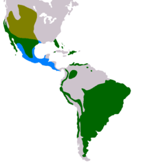
Aspectos Reprodutivos
- Tempo de Reprodução: A estação de reprodução da coruja-buraqueira começa entre março ou abril.
- Ninho: A coruja-buraqueira faz seu ninho em buracos no solo, aproveitando antigas tocas de tatu ou de outros animais. O casal se reveza para alargar o buraco, cava uma galeria horizontal usando os pés e o bico e, por fim, forra a cavidade do ninho com capim seco. As covas têm entre 1,5 metro e 3 metros de profundidade, e entre 30 cm e 90 cm de largura.
- Comportamento Monogâmico: As corujas-buraqueiras são, normalmente, monógamas, mas ocasionalmente um macho terá duas companheiras.
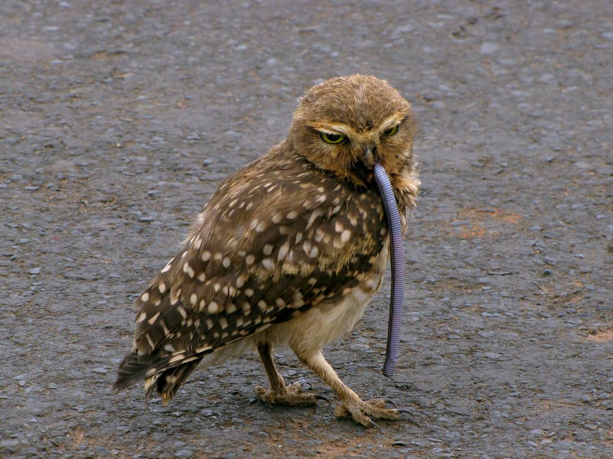
Coruja Buraqueira se Alimentando.